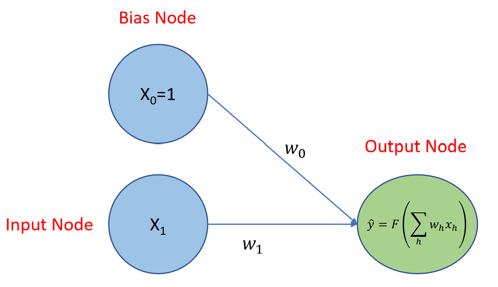
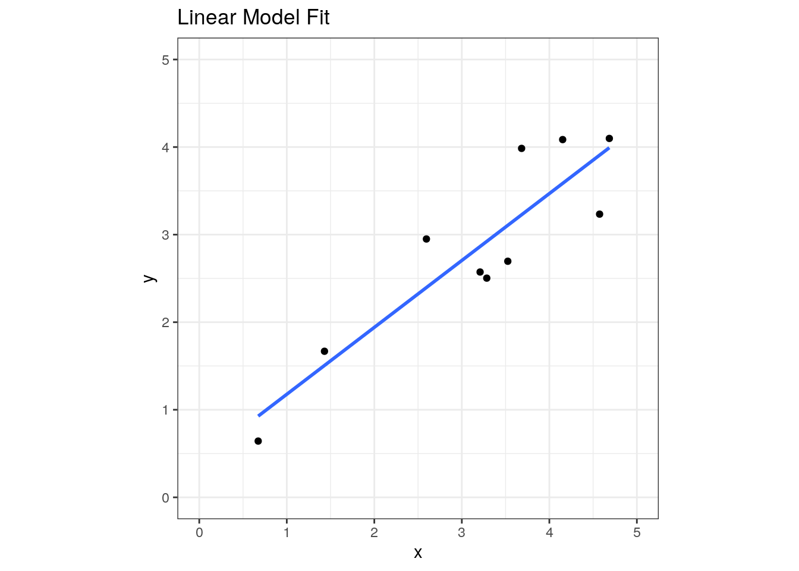
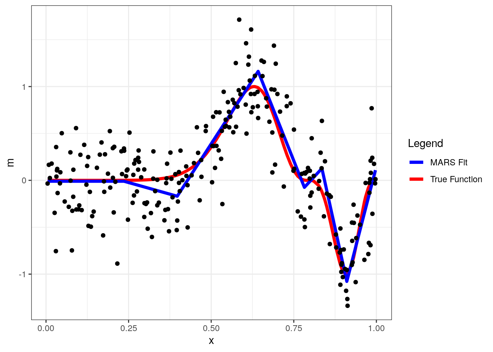

12 Optional Advanced DOE Topics
12.1 Robust Design
12.2 Sequential Designs
12.3 Ridge Regression
12.4 Neural Network Regression
Like support vector machines and tree-based models, neural networks can be applied to both regression and classification tasks. Neural networks originated in the field of neurophysiology as an attempt to model human brain activity (Warren S. McCulloch 1943) at the neuron level, but it wasn’t until the 1980s and 1990s (see David E. Rumelhart 1986; Bishop 1995) that they began to be developed into their current form. Neural network models are fit using a training algorithm that slowly reduces prediction error using a process called gradient descent.
12.4.1 Simple Neural Network Model
Before we get into that, let’s look at visualization of a neural network regression model in it’s simplest form: one to solve for \(\beta_0\) and \(\beta_1\) given the equation \(y = \beta_0 x_0 + \beta_1 x_1 + \epsilon\) where we know \(x_0 = 1\). Below, the two blue circles are referred to as the input layer and consist of two nodes: an input node that will be used to solve for \(\beta_1\), and a bias node to solve for \(\beta_0\), the y-intercept. Each node of the input layer is connected to the output layer, which consists of just one node because we’ll be predicting a single continuous variable, \(\hat{y}\). If this was a classification problem, and we were trying to classify the three types of irises found in the iris data set, then the output layer would have three nodes, each producing a probability. There is a model parameter, referred to as a weight, associated with each connected node as indicated by the \(\omega_0\) and \(\omega_1\) terms. The output node produces a prediction, \(\hat{y}\), using an activation function. In the case of linear regression, we use a linear activation function of the form \(f(\sum\limits_{h}{\omega_h} x_h)\). That’s it - that’s the model!

12.4.2 Gradient Descent
The algorithm used to train the model is called gradient descent, and to demonstrate how it works, we need to set the stage first. Let’s assume that we’re trying to find the \(\beta\)s that have the following relationship with the predictor:
\[y = 1 + 0.5x + \epsilon\] We’ll create a data set with 10 observations and fit a linear model for comparison later.
set.seed(42)
nn_reg = tibble(
x = runif(10, 0, 5),
y = 1 + 0.5*x + rnorm(10, sd=0.5)
)
ggplot(nn_reg, aes(x=x, y=y)) +
geom_point() +
geom_smooth(formula='y~x', method='lm', se=FALSE) +
coord_fixed(xlim=c(0,5), ylim=c(0,5)) +
ggtitle("Linear Model Fit") +
theme_bw()
##
## Call:
## lm(formula = y ~ x, data = nn_reg)
##
## Residuals:
## Min 1Q Median 3Q Max
## -0.67369 -0.38063 -0.08963 0.41550 0.75801
##
## Coefficients:
## Estimate Std. Error t value Pr(>|t|)
## (Intercept) 0.4127 0.4516 0.914 0.387494
## x 0.7641 0.1324 5.773 0.000418 ***
## ---
## Signif. codes: 0 '***' 0.001 '**' 0.01 '*' 0.05 '.' 0.1 ' ' 1
##
## Residual standard error: 0.5164 on 8 degrees of freedom
## Multiple R-squared: 0.8064, Adjusted R-squared: 0.7822
## F-statistic: 33.32 on 1 and 8 DF, p-value: 0.000418Before the model is trained, its weights are initialized with random numbers. I’ll just pick two random numbers between -1 and 1.
## [1] 0.8296121## [1] 0.8741508Since these model parameters are just random numbers, the predictions will not be very accurate. That’s ok, though, and it’s the starting point for all untrained neural network models. We’ll go through the following iterative process to slowly train the model to make more and more accurate predictions.
The Training Process
- Make predictions for input values.
- Measure the difference between those predictions and the true values (called the loss).
- Compute the partial derivative (gradient) of the loss with respect to the model parameters.
- Update the model parameters using the partial derivative values computed in the previous step.
- Repeat this process until the loss is either unchanged or is sufficiently low.
The next several code chunks demonstrate this process one step at a time.
Step 1. Make predictions.
We can make predictions manually using the randomly initialized weight and bias.
## [1] 4.828004 4.925338 2.080258 4.459294 3.634524 3.098453 4.049059 1.418207
## [9] 3.701164 3.911277Step 2. Calculate the loss.
There are a number of ways we could do this, but for this example, we’ll calculate the loss by determining the mean squared error of the predictions and the target values. Mean squared error is defined as:
\[MSE = \frac{1}{n} \sum\limits_{i=1}^{n}{(y_i - \hat{y}_i)^2}\]
mse = function(predicted){1/length(predicted)* sum((nn_reg$y - predicted)^2)}
# the loss
(loss = mse(y_hat))## [1] 0.8201885Step 3. Compute the partial derivatives of the loss.
At this point, we have two random values for \(\omega_0\) and \(\omega_1\) and an associated loss (error). Now we need to find new values for the \(\omega\)s that will decrease the loss. How do we do that? For each \(\omega\), we need to determine whether we should increase or decrease it’s value and by how much. We determine whether to increase or decrease its value by calculating the gradient of the loss function at the current \(\omega\) values. To demonstrate graphically, the loss as a function of \(\omega_0\) and \(\omega_1\) are plotted below.
# sequence of w0 values
Bvec = seq(from=(w0-1), to=(w0+1), length.out = 21)
# calculate loss while holding w1 constant
Bloss = Bvec %>% map(function(x) get_estimate(x, w1)) %>% map_dbl(function(x) mse(x))
# get a curve through the points and get the gradient
Bspl = smooth.spline(Bloss ~ Bvec)
# get the gradient at w0
Bgrad = predict(Bspl, x=w0, deriv=1)$y
# same thing for w1
Wvec = seq(from=(w1-1), to=(w1+1), length.out = 21)
Wloss = Wvec %>% map(function(x) get_estimate(w0,x)) %>% map_dbl(function(x) mse(x))
Wspl = smooth.spline(Wloss ~ Wvec)
Wgrad = predict(Wspl, x=w1, deriv=1)$y
w0plot = ggplot() +
geom_line(aes(x=Bvec, y=Bloss), color='red', size=1.5) +
geom_line(aes(x=c(w0-0.5, w0+0.5), y=c(Bloss[11]-Bgrad/2, Bloss[11]+Bgrad/2)), color='blue', size=1.5) +
geom_point(aes(x=Bvec[11], y = Bloss[11]), size=5) +
annotate("text", x=0.5, y=2, label=paste("Slope =", round(Bgrad, 2))) +
coord_fixed(ylim=c(0,3.5)) +
xlab("w0") + ylab("Loss") +
theme_bw()
w1plot = ggplot() +
geom_line(aes(x=Wvec, y=Wloss), color='red', size=1.5) +
geom_line(aes(x=c(w1-0.5, w1+0.5), y=c(Wloss[11]-Wgrad/2, Wloss[11]+Wgrad/2)), color='blue', size=1.5) +
geom_point(aes(x=Wvec[11], y=Wloss[11]), size=5) +
annotate("text", x=1.4, y=0.5, label=paste("Slope =", round(Wgrad, 2))) +
coord_fixed(ylim=c(0,3.5)) +
xlab("w1") + ylab("Loss") +
theme_bw()
gridExtra::grid.arrange(w0plot, w1plot, nrow=1, ncol=2)
In practice, the partial derivatives are calculated as follows:
## [1] 7.670526## [1] 26.07812Step 4. Update the model parameters.
From the above plots, we can see that to decrease the loss, we need to decrease both \(\omega\)s. In fact, the following rules always apply:
With a positive gradient, decrease the parameter value.
With a negative gradient, increase the parameter value.
We know we need to decrease the parameter values, so now we need to determine how much to decrease them. Right now, all we have to go on are the magnitude of the gradients. If we decreased the parameters by their respective gradients, the new parameter values would be far to the left on both plots above - we would overshoot the bottom of the curve in both cases. Instead of using the full gradient value, it appears that the parameters should be updated as follows:
\[\omega_{new} = (\omega_{old}) - (\omega_{gradient})(\alpha)\]
Where \(\alpha\) is a multiplier in the range [0, 1], and is referred to as the learning rate. For our example, \(\alpha=0.01\) will suffice, but keep in mind that \(\alpha\) is a hyperparameter that often must be tuned. The code below selects \(\alpha\), updates the parameter values, and recalculates the loss. Notice that the loss has decreased as expected.
## [1] 0.6816571Next we’ll put all this in a loop, iterate through a number of times, and see what we get for parameter estimates. I’ll start from the beginning and capture the parameters and loss as training progresses through 5000 iterations. Below, the parameter estimates are plotted for each iteration and compared to the linear model coefficients.
set.seed(42)
w0 = runif(1, -1, 1)
w1 = runif(1, -1, 1)
alpha = 0.001
w0s = w0
w1s = w1
for (j in 1:500){
for (i in 1:nrow(nn_reg)){
y_hat = get_estimate(w0, w1)
Bgrad = sum(-(nn_reg$y - y_hat))
Wgrad = sum(-(nn_reg$y - y_hat) * nn_reg$x)
w0 = w0 - Bgrad * 0.001
w1 = w1 - Wgrad * 0.001
w0s = c(w0s, w0)
w1s = c(w1s, w1)
}
}
wHistory = tibble(
iter = 1:length(w0s),
b = w0s,
w = w1s
)
library(gganimate)## No renderer backend detected. gganimate will default to writing frames to separate files
## Consider installing:
## - the `gifski` package for gif output
## - the `av` package for video output
## and restarting the R sessionggplot(wHistory) +
geom_point(aes(x=iter, y=w0s, color='w_0 Estimate', group=seq_along(iter))) +
geom_hline(yintercept=coef(nn.lm)[1]) +
annotate("text", x=1200, y=0.43, label="Linear Model Intercept Coefficient") +
geom_point(aes(x=iter, y=w1s, color='w_1 Estimate', group=seq_along(iter))) +
geom_hline(yintercept=coef(nn.lm)[2]) +
annotate("text", x=1300, y=0.785, label="Linear Model Slope Coefficient") +
scale_color_manual(name="Legend", values=c('blue', 'red')) +
xlab("Iteration") + ylab("Parameter Value") +
theme_bw() +
transition_reveal(iter)## Warning: No renderer available. Please install the gifski, av, or magick package
## to create animated output## NULLTo visualize the gradient descent methodology, calculate the loss for a range of \(\omega_0\) and \(\omega_1\) values and plot the loss function as a surface.
loss_fn = expand_grid(bs=seq(0.3,0.9,length.out=20), ws=seq(0.5,1,length.out=20))
loss_fn$Loss = 1:nrow(loss_fn) %>%
map(function(x) get_estimate(loss_fn[x,'bs'] %>% .$bs, loss_fn[x,'ws']%>% .$ws)) %>%
map_dbl(function(x) mse(x))
ggplot(wHistory) +
geom_raster(data=loss_fn, aes(x=bs, y=ws, fill=Loss)) +
geom_contour(data=loss_fn, aes(x=bs, y=ws, z=Loss), color='white', bins=28) +
geom_point(aes(x=b, y=w, group=seq_along(iter)), color='yellow', size=5) +
xlab("Intercept") + ylab("Slope") +
theme_bw() +
transition_time(iter) +
labs(title = paste("Gradient Descent Iteration:", "{round(frame_time, 0)}")) +
shadow_wake(wake_length = 0.2)## Warning: No renderer available. Please install the gifski, av, or magick package
## to create animated output## NULLWe can also see the regression line update as training progresses.
ggplot(wHistory) +
geom_smooth(data=nn_reg, aes(x=x, y=y), formula='y~x', method='lm', se=FALSE) +
geom_abline(aes(intercept=b, slope=w), color='red') +
geom_point(data=nn_reg, aes(x=x, y=y)) +
coord_fixed(xlim=c(0,5), ylim=c(0,5)) +
theme_bw() +
transition_time(iter) +
labs(title = paste("Gradient Descent Iteration:", "{round(frame_time, 0)}")) ## Warning: No renderer available. Please install the gifski, av, or magick package
## to create animated output## NULLLet’s compare the final parameter estimates from the neural network model to the linear model coefficients.
tibble(
Model = c("Linear", "Neural Network"),
w_0 = c(coef(nn.lm)[1], tail(w0s, 1)),
w_1 = c(coef(nn.lm)[2], tail(w1s, 1))
)## # A tibble: 2 x 3
## Model w_0 w_1
## <chr> <dbl> <dbl>
## 1 Linear 0.413 0.764
## 2 Neural Network 0.414 0.764There are a variety of R packages to simplify the process of fitting a neural network model. Since we’re doing regression and not something for complicated like image classification, natural language processing, or reinforcement learning, a package like nnet provides everything we need.
nnModel = nnet::nnet(y ~ x, data = nn_reg, # formula notation is the same as lm()
linout = TRUE, # specifies linear output (instead of logistic)
decay = 0.001, # weight decay
maxit = 100, # stop training after 100 iterations
size = 0, skip = TRUE) # no hidden layer (covered later)## # weights: 2
## initial value 31.444863
## final value 2.134476
## converged## a 1-0-1 network with 2 weights
## options were - skip-layer connections linear output units decay=0.001
## b->o i1->o
## 0.41 0.76From the model summary, we see that has two weights: one for \(\omega_0\) and one for \(\omega_1\). The initial and final values are model error terms. Converged means that training stopped before it reached maxit. The model takes the form 1-0-1, which means it has one input node (the bias, or intercept, node is automatically included) in the input layer, 0 nodes in the hidden layer (we’ll cover hidden layers later), and one node in the output layer. The b->o term is our \(\omega_0\) (intercept) parameter value, and i1->o is our \(\omega_1\) (slope) parameter value. We can extract the coefficients the usual way.
## b->o i1->o
## 0.4125070 0.764127612.4.3 Multiple Linear Regression
The neural network model can be easily expanded to accommodate additional predictors by adding a node to the input layer for each additional predictor and connecting it to the output node. Below is a comparison of coefficients obtained from a linear model and a neural network model for a data set with three predictors.
# make up data
set.seed(42)
mlr = tibble(
x1 = runif(10, 0, 5),
x2 = runif(10, 0, 5),
x3 = runif(10, 0, 5),
y = 1 + 0.5*x1 - 0.5*x2 + x3 + rnorm(10, sd=0.5)
)
# linear model coefficients
coef(lm(y ~ ., data=mlr))## (Intercept) x1 x2 x3
## 2.0447549 0.5355719 -0.7312496 0.8035532# neural network coefficients
coef(nnet::nnet(y ~ ., data = mlr, linout = TRUE, decay = 0.001, maxit = 100,
size = 0, skip = TRUE))## # weights: 4
## initial value 195.927838
## final value 4.149504
## converged## b->o i1->o i2->o i3->o
## 2.0399505 0.5361400 -0.7307887 0.8040190If you think this seems like overkill just to model a linear relationship between two variables, I’d agree with you. But consider this:
What if the relationship between two variables isn’t linear?
What if there are dozens of predictor variables and dozens of response variables and the underlying relationships are highly complex?
In cases like these, neural networks models can be very beneficial. To make that leap, however, we need to give our neural network model more power by giving it the ability to model these complexities. We do that by adding one or more hidden layers to the model.


12.5 Neural Network Classification
Neural network models have been extremely successful when applied to classification tasks such as image classification and natural language processing. These models are highly complex and are built using sophisticated packages such as TensorFlow (developed by Google) and PyTorch (developed by Facebook). Building complex models for those kinds of classification tasks are beyond the scope of this tutorial. Instead, this section provides a high-level overview of classification using the nnet package and the iris data set.
The neural network training algorithm for classification is the same as for regression, but for classification, we need to change some of the attributes of the model itself. Instead of a linear activation function in the output layer, we need to use the softmax function. Doing so will cause the output layer to produce probabilities for each of the three flower species (this is accomplished by simply removing linout = TRUE from the nnet() function. Additionally, we use a categorical cross entropy loss function instead of mean squared error. Below, I also set rang = 0.1 to scale the predictors to be in the range recommended in the function help. We’ll also create the same training/test split as in the non-parametric regression chapter so we can directly compare results.
# create a training and a test set
set.seed(0)
train = caTools::sample.split(iris, SplitRatio = 0.8)
iris_train = subset(iris, train == TRUE)
iris_test = subset(iris, train == FALSE)
# train the model
irisModel = nnet::nnet(Species ~ ., data = iris_train,
size=2, # only two nodes in the hidden layer
maxit=200, # stopping criteria
entropy=TRUE, # switch for entropy
decay=5e-4, # weight decay hyperparameter
rang=0.1) # scale input values## # weights: 19
## initial value 131.916499
## iter 10 value 75.933787
## iter 20 value 56.873818
## iter 30 value 55.958531
## iter 40 value 55.852468
## iter 50 value 55.797951
## iter 60 value 51.382669
## iter 70 value 11.286807
## iter 80 value 7.667108
## iter 90 value 7.657444
## iter 100 value 7.643547
## iter 110 value 7.642436
## iter 120 value 7.641672
## iter 130 value 7.640995
## iter 140 value 7.640338
## iter 150 value 7.627436
## iter 160 value 7.377523
## iter 170 value 5.672073
## iter 180 value 4.882416
## iter 190 value 4.810307
## iter 200 value 4.793242
## final value 4.793242
## stopped after 200 iterations## setosa versicolor virginica
## 5 0.9956736 0.004326355 6.389963e-16
## 10 0.9911208 0.008879241 2.890320e-15
## 15 0.9976183 0.002381730 1.829078e-16
## 20 0.9957229 0.004277111 6.238407e-16
## 25 0.9739590 0.026040969 2.797958e-14
## 30 0.9901588 0.009841242 3.588147e-15This first six predictions for the test set are shown above, and notice that the values are in fact probabilities. The model is highly confident that each one of these first six predictions are setosa. Recall from the SVM and CART sections of the non-parametric regression chapter that both of those models misclassified test set observations #24 and #27 as versicolor that are actually virginica. Below we see that the neural network model correctly predicts both observations but is less confident about observation #24.
## setosa versicolor virginica
## 120 7.348409e-11 0.18917739 0.8108226
## 135 5.486873e-13 0.03107722 0.9689228The confusion matrix for the entire test set reveals that the model has an accuracy of 100%.
iris_cm = cvms::confusion_matrix(
targets = iris_test[, 5],
predictions = colnames(iris_preds)[max.col(iris_preds)])
cvms::plot_confusion_matrix(iris_cm$`Confusion Matrix`[[1]], add_zero_shading = FALSE) +
ggtitle("Neural Network Confusion Matrix")## Warning in cvms::plot_confusion_matrix(iris_cm$`Confusion Matrix`[[1]], :
## 'ggimage' is missing. Will not plot arrows and zero-shading.## Warning in cvms::plot_confusion_matrix(iris_cm$`Confusion Matrix`[[1]], : 'rsvg'
## is missing. Will not plot arrows and zero-shading.
12.6 Multivariate Adaptive Regression Splines
## Selected 7 of 12 terms, and 1 of 1 predictors
## Termination condition: Reached nk 21
## Importance: exa$x
## Number of terms at each degree of interaction: 1 6 (additive model)
## GCV 0.09986259 RSS 23.03432 GRSq 0.6894275 RSq 0.71797## Call: earth(x=exa$x, y=exa$y)
##
## coefficients
## (Intercept) -0.0097451
## h(exa$x-0.236) -0.9896598
## h(exa$x-0.3972) 6.4260664
## h(exa$x-0.6421) -14.2707959
## h(exa$x-0.7821) 12.6408844
## h(exa$x-0.8351) -19.7830105
## h(exa$x-0.9105) 29.6611872
##
## Selected 7 of 12 terms, and 1 of 1 predictors
## Termination condition: Reached nk 21
## Importance: exa$x
## Number of terms at each degree of interaction: 1 6 (additive model)
## GCV 0.09986259 RSS 23.03432 GRSq 0.6894275 RSq 0.71797mars_preds = predict(marsFit, exa$x)
ggplot() +
geom_line(data=exa, aes(x=x, y=m, color='True Function'), size=1.5) +
geom_line(aes(x=exa$x, y=mars_preds, color='MARS Fit'), size=1.5) +
geom_point(data=exa, aes(x=x, y=y)) +
scale_color_manual(name="Legend", values=c('blue', 'red')) +
theme_bw() 
With bootstrap aggregation.
marsFit2 = caret::bagEarth(exa$x, exa$y)
mars_preds2 = predict(marsFit2, exa$x)
ggplot() +
geom_line(data=exa, aes(x=x, y=m, color='True Function'), size=1.5) +
geom_line(aes(x=exa$x, y=mars_preds2, color='Bagged MARS Fit'), size=1.5) +
geom_point(data=exa, aes(x=x, y=y)) +
scale_color_manual(name="Legend", values=c('blue', 'red')) +
theme_bw() 
12.7 Non-Parametric Statistics
Akaike, Hirotugu. 1974. “A New Look at the Statistical Model Identification.” IEEE Transactions on Automatic Control 19(6).
Bishop, Christopher. 1995. Neural Networks for Pattern Recognition. Oxford University Press.
David E. Rumelhart, James L. McClelland. 1986. Parallel Distributed Processing. MIT Press.
Devore, Jay. 2015. Probability and Statisticsfor Engineering and the Sciences. 9th ed. Cengage Learning.
Faraway, Julian. 2006. Extending the Linear Model with R: Generalized Linear, Mixed Effects and Nonparametric Regression Models. CRC Press.
———. 2014. Linear Models with R. Chapman & Hall.
George Box, William G. Hunter, J. Stuart Hunter. 2005. Statistics for Experimenters. Wiley.
Law, Averill. 2015. Simulation Modeling and Analysis. McGraw Hill Education.
Montgomery, Douglas C. 2017. Design and Analysis of Experiments. John wiley & sons.
Trevor Hastie, Robert Tibshirani, and Jerome Friedman. 2008. The Elements of Statistical Learning. Springer.
Warren S. McCulloch, Walter H. Pitts. 1943. “A Logical Calculus of the Ideas Immanent in Nervous Activity.” Bulletin of Mathematical Biophysics 5.
References
Bishop, Christopher. 1995. Neural Networks for Pattern Recognition. Oxford University Press.
David E. Rumelhart, James L. McClelland. 1986. Parallel Distributed Processing. MIT Press.
Warren S. McCulloch, Walter H. Pitts. 1943. “A Logical Calculus of the Ideas Immanent in Nervous Activity.” Bulletin of Mathematical Biophysics 5.